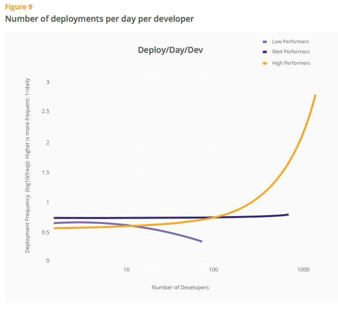
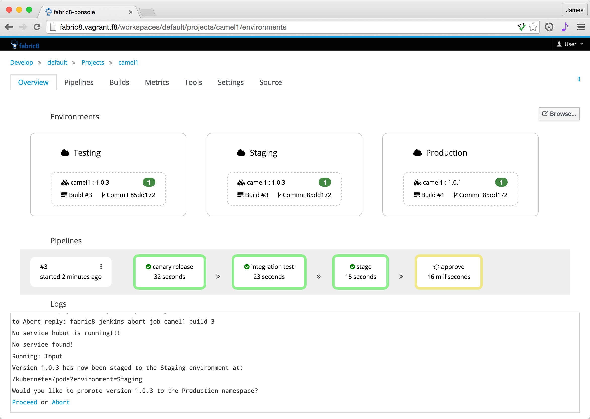

Kubernetes for Developers
with OpenShift and Fabric8
Created by James Strachan / @jstrachan from Red Hat
How can we deliver business value faster?
despite increasing complexity, technologies, requirements and scale?
Microservices / DevOps
-
refactor monolith software into separate microservices
- each microservice has its own release cycle
-
refactor monolith team into separate teams
- one team per microservice for Dev + Test + Ops
- 2 pizza rule rather than Mythical Man month
-
automate everything
- immutable infrastructure
- Continous Integration / Delivery / Deployment / Improvement
Why DevOps is important:

https://puppetlabs.com/blog/2015-state-devops-report-here

Kubernetes
- the ideal microservices platform:
- self service platform for developers
- each team / microservice / environment can work in their own namespace
- release any microservice in any namespace at any time
Kubernetes: sub atomic particles
- Pods
- Replication Controllers
- Services
Pod
- for a Java person, just think JVM with:
- environment variables
- ports
- volumes
- each Pod has its own unique IP address
apiVersion: "v1"
kind: "ReplicationController"
metadata:
name: "elasticsearch"
spec:
replicas: 1
selector:
component: "elasticsearch"
provider: "fabric8"
template:
metadata:
labels:
component: "elasticsearch"
provider: "fabric8"
spec:
containers:
-
name: "elasticsearch"
image: "fabric8/elasticsearch-k8s:1.5.2"
env:
-
name: "SERVICE_DNS"
value: "elasticsearch-cluster"
ports:
-
containerPort: 9200
name: "http"
Replication Controller
Service
- each service has its own unique IP address
apiVersion: "v1"
kind: "Service"
metadata:
name: "elasticsearch"
labels:
component: "elasticsearch"
provider: "fabric8"
spec:
ports:
-
port: 80
targetPort: 9200
selector:
component: "elasticsearch"
provider: "fabric8"
Service
- services can be implmemented:
- internally using pod selectors
- externally or aliased by creating Endpoints
- services are visible internally and can be exposed externally
- GKE:
type: LoadBalancer - OpenShift:
oc expose service foo
Service Discovery
for a service called foo-bar here is how you discover to it:
- http://foo-bar/
- https://foo-bar/
Works nicely for different namespaces / environments without code or config change!
DNS FTW!
Kubernetes: sub atomic particles
- Pods
- Replication Controllers
- Services
Tools
- kubectl get pods
- kubectl delete pod foo-abc234
- kubectl create -f foo.json
Microservice on Kubernetes?
each microservice typically has:
- Replication Controller
- Service
Develop microservices on Kubernetes
- Write some code
- Put code into docker image
- Create kubernetes metadata
- Apply the metadata to an environment
- Resize and rolling upgrades
- CI / CD can automate the above ;)
Fabric8

What is Fabric8?
- Integration Platform that runs on top of Kubernetes (iPaaS)
- Implemented as modular microservices
- Also includes:
- Continuous Delivery Platform
- ChatOps, Chaos Monkey & Angry Pods
- Management: (Console, Logging, Metrics)
Fabric8 Console

Fabric8: Java Tools
- Maven plugins for docker & kubernetes
- Integration Testing on Kubernetes
- Arquillian plugin for JUnit
- Dependency Injection for CDI and Spring
- Java Libraries for working with Kubernetes
Maven Plugins
build docker image:
$ mvn docker:build
generate kubernetes resources:
$ mvn fabric8:json
apply resources to kubernetes:
$ mvn fabric8:apply
System / Integration Testing

Pre-commit!
- Have single node Kubernetes VM on your laptop
- Treat it kinda like an application server
- Get rapid developer flow:
mvn docker:build docker:watch
soon using the new oc sync command for faster sync to docker container!
eclipse tooling coming in JBDS & the CDK...
Summary
- use CI / CD post commit:
- automate the movement code and config through environments
- optimise pre-commit development flow
- discover services via DNS:
- no code or config change per environment
- fabric8 arquillian for system/integration testing on kubernetes
Any questions?
| kubernetes.io | orchestrate your containers |
| openshift.org | kubernetes based PaaS |
| fabric8.io | Integration & CI / CD Platform for k8s |
CDI / Spring